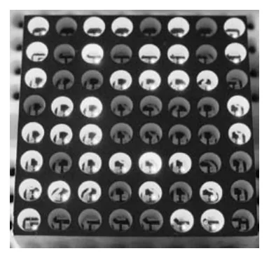

To display an image or pattern on the LED matrix, we need a function that turns on only one LED at a time. However, to display an image, we need to turn on and off the LEDs that represent the image very quickly in order to create persistence of vision (POV) effects. Persistence of vision produces an image that remains in our eye for a fraction of a second after the image is gone. We can harness this effect to create custom images by “scanning” the matrix to display one row of LEDs at a time, very quickly. This technique can be useful for creating animation, for displaying data, and for creating various other artistic effects.
We will demonstrate controlling individual LEDs in the next two projects. In the following sketch, the function void setLED() accepts a row and column number and the duration to keep the LED turned on. Then it randomly turns on LEDs one at a time.
// Project 22 - Creating Images on an LED Matrix
#define DATA 6 // connect to pin 14 on the 74HC595
#define LATCH 8 // connect to pin 12 on the 74HC595
#define CLOCK 10 // connect to pin 11 on the 74HC595
void setup()
{
pinMode(LATCH, OUTPUT);
pinMode(CLOCK, OUTPUT);
pinMode(DATA, OUTPUT);
randomSeed(analogRead(0));
}
❶ int binary[] = {1, 2, 4, 8, 16, 32, 64, 128};
int r, c = 0;
void setLED(int row, int column, int del)
{
digitalWrite(LATCH, LOW);
shiftOut(DATA, CLOCK, MSBFIRST, ~binary[column]); // columns
shiftOut(DATA, CLOCK, MSBFIRST, binary[row]); // rows
digitalWrite(LATCH, HIGH);
delay(del);
}
void loop()
{
r = random(8);
c = random(8);
setLED(r, c, 1); // set a random row and column on for 1 millisecond
}Instead of sending binary numbers directly to the shiftOut() functions to control which lights are turned on, we use a lookup table in the form of an array, int binary[], at ❶. This lookup table contains the decimal equivalent for each bit of the byte sent to the shift register. For example, to turn on the LED at row 4, column 4, we send binary[3] (which is 8, or B00001000) to both shift registers (with the addition of ~ for the column). This is a convenient way of converting desired row or column numbers into a form the shift register can use; you don’t need to think in binary, just the row or column you need to turn on.

By running Project 22 with a delay of 1 millisecond, the LEDs turn on and off so fast that the eye perceives that more than one LED is lit at a time; this demonstrates the concept of POV: It creates the illusion that more than one LED is lit at once, when in fact only one LED is lit at once. An example of this is shown in Figure 6-22.